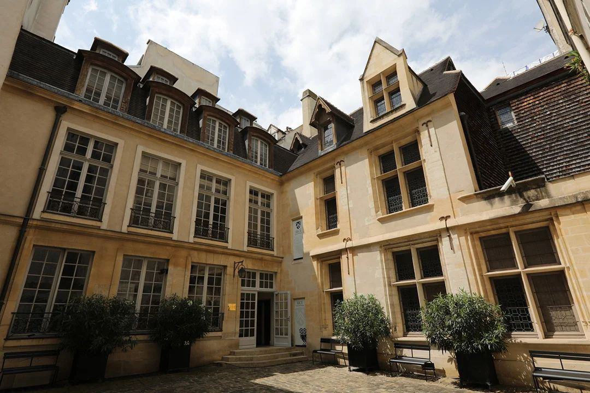
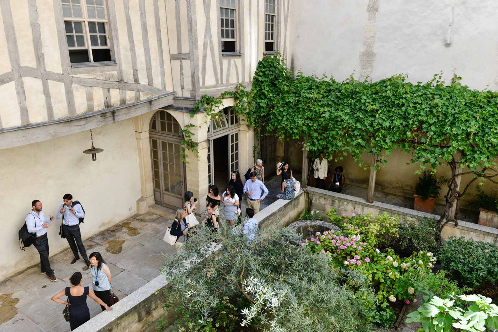
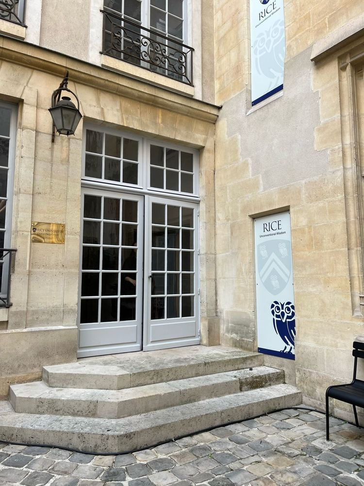

The meeting
In classical mechanics or classical electromagnetism courses, we help students build physical intuition: a clear picture of the processes the equations describe. In quantum mechanics, teaching centers on the mathematical formalism, and that gap matters more as calculation becomes increasingly automated.
Quantum mechanics predicts experiments with extraordinary precision, yet physicists still disagree about what it tells us about the world. Several accounts give the same predictions and very different pictures; most courses teach one, often only implicitly. This meeting brings together physics education researchers, philosophers and physicists working on the foundations of quantum mechanics to explore what students gain from bringing questions about the physical meaning of the mathematical formalism into the standard course, rather than leaving them aside.
1927 · 2027
A century after Solvay
In October 1927 the fifth Solvay Conference in Brussels set alternative accounts of the new quantum theory side by side. Louis de Broglie, who had introduced matter waves in his Paris thesis, presented his pilot-wave theory; Born and Heisenberg presented quantum mechanics; Schrödinger, wave mechanics. The debate did not end there.
- 1924ParisDe Broglie's thesis on matter waves
- 1927BrusselsAlternative accounts debated at Solvay
- 2027ParisWhat should students learn from them?
A hundred years on, the debate is still open. This meeting returns to Paris to ask what it means for teaching.
Provisional program
The detailed program and speakers are being developed.
- Wednesday
- Main views and what they offer quantum educationInvited speakers present the main views and discuss what each may help students understand.
- Thursday
- Evidence and resources for teachingEducation research, historical cases, simulations, and course materials inform round tables on classroom approaches.
- Friday
- Guidance for instructorsRound tables and working groups draft practical teaching options and open research questions.



Rice Global Paris Center
The meeting takes place at Rice University's center in the Marais, one of the oldest neighborhoods in Paris. The building dates from 1540 and was built as a private residence in the reign of Francis I. It is set back from the street around a private courtyard and garden, and now hosts research meetings, conferences, and student programs.
The meeting room seats 35, which sets the size of the meeting. The center is air-conditioned.
Getting there
- Metro: Hôtel de Ville (lines 1 and 11) or Saint-Paul (line 1), a few minutes' walk.
- From Charles de Gaulle airport: RER B to Châtelet–Les Halles, then metro line 1 or a short walk; about 70 minutes.
- From Orly airport: metro line 14 to Châtelet, then metro line 1 or a short walk.
- From Gare de Lyon: metro line 1, about 15 minutes.
The streets around the center are narrow; public transport or walking is recommended.
Accommodation
Participants book their own lodging; there is no group rate. July is high season in Paris, so we recommend booking early, with a refundable rate. Not all small hotels in the Marais have air conditioning, so check before booking. The hotels below are air-conditioned and come from a list prepared by Rice Global Paris; times are to the center.
Price guide per night: $ under $250 · $$ $250–400 · $$$ over $400. Indicative only, based on recent typical rates on Kayak; July is high season and usually costs more.
Within a 10-minute walk
- Hotel du Vieux Marais · 3★ · 2 min walk · $$
- Hôtel de Nice · 3★ · 3 min walk · $$
- Hôtel 9 Confidentiel · 4★ · 4 min walk · $$$
- Hôtel Beaubourg · 3★ · 5 min walk · $
- Hôtel Bourg Tibourg · 4★ · 5 min walk · $$$
- Hôtel Caron de Beaumarchais · 3★ · 5 min walk · $$
- Hôtel Duo · 4★ · 5 min walk · $$
- Hôtel Le Compostelle · 3★ · 5 min walk
- Grand Hôtel Malher · 3★ · 6 min walk · $$$
- Hôtel Emile Le Marais · 3★ · 6 min walk · $
- Hôtel Caron Le Marais · 3★ · 9 min walk · $$
- Hôtel Charles V · 4★ · 10 min walk · $$$
Larger hotels, a little farther
- Novotel Gare de Lyon · 4★ · about 16 min by metro · $$
- Ibis Paris Bastille Opéra · 3★ · about 17 min by metro, 20 min on foot · $
- Moxy Paris Bastille · 3★ · about 20 min on foot · $$
Budget options (not on the Rice Global Paris list)
Cheaper places we found ourselves. Hostels offer private rooms; check air conditioning before booking.
- MIJE Marais (Fourcy) · Youth hostel, breakfast included · 8 min walk · $ · air conditioning unclear; some shared toilets
- The People Paris Marais · Hostel, private rooms with bathroom · 15 min walk · $ · no air conditioning
- B&B Hotel Paris Porte des Lilas · 2★ · about 20 min by metro (line 11, direct) · $
- Generator Paris · Hostel, private rooms with bathroom · about 25 min by metro · $
Within a 10-minute walk
Larger hotels, a little farther
Budget options (not on the Rice Global Paris list)
Photos are from the hotels' own websites.
Gold marker: Rice Global Paris Center. Blue: hotels within a 10-minute walk. Grey: larger hotels farther away. Green: budget options. Map data © OpenStreetMap contributors.
Questions about accommodation? Contact the organizers.
Organizing committee
- Pablo Yepes (chair)Rice University
- Anssi KuhaMetropolia University of Applied Sciences
- Travis NorsenSmith College
- Xavier OriolsUniversitat Autònoma de Barcelona
- Jared StensonRice University
Advisory committee
- Jean BricmontUCLouvain (emeritus)
- Dustin LazaroviciTechnion – Israel Institute of Technology
- Tim MaudlinNew York University
- Avraham MerzelHebrew University of Jerusalem
- Rachel ScherrUniversity of Washington Bothell
Participants
- Maria BondaniCNR – Istituto di Fotonica e Nanotecnologie
- Kim Krijtenburg-LewerissaUtrecht University, Freudenthal Institute
- Anssi KuhaMetropolia University of Applied Sciences
- Avraham MerzelHebrew University of Jerusalem
- Travis NorsenSmith College
- Xavier OriolsUniversitat Autònoma de Barcelona
- Gina PassanteCalifornia State University, Fullerton
- Rachel ScherrUniversity of Washington Bothell
- Jer SteegerUniversity of Bristol
- A. Shadi Tahvildar-ZadehRutgers University
- Pablo YepesRice University
11 listed · updated November 3, 2026